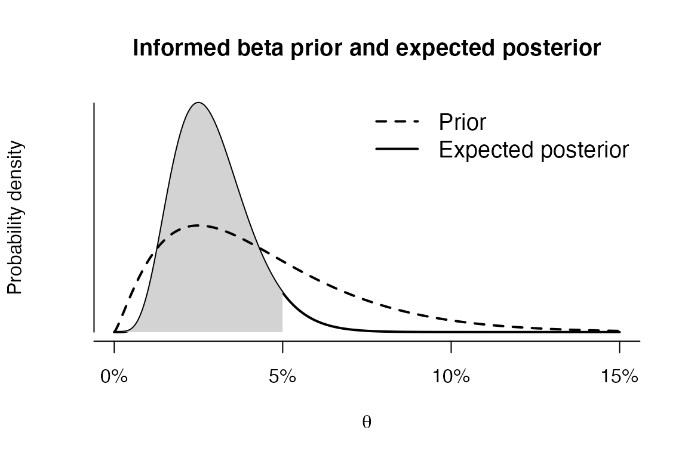
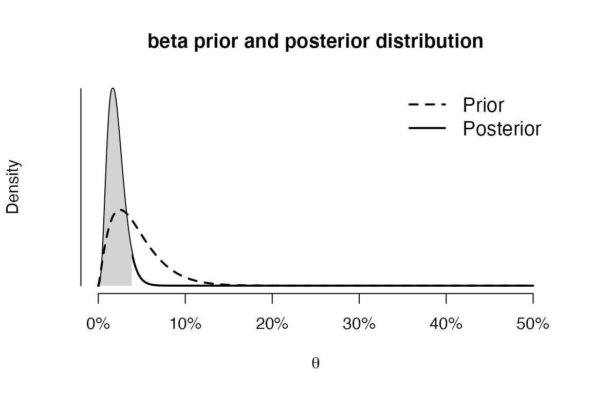

Workflow: Bayesian audit sampling
Koen Derks
last modified: 27-10-2021
Source:vignettes/v2_bayesian_sampling_workflow.Rmd
v2_bayesian_sampling_workflow.RmdScenario
This vignette aims to show how the jfa package facilitates auditors in the standard audit sampling workflow (hereafter “audit workflow”). In this example of the audit workflow, we will consider the case of BuildIt. BuildIt is a fictional construction company in the United States that is being audited by Laura, an external auditor for a fictional audit firm. At the end of the year, BuildIt has provided a summary of its financial situation in the financial statements. Laura’s job as an auditor is to formulate an opinion about the fairness and correctness of BuildIt’s financial statements.
Therefore, Laura needs to obtain sufficient and appropriate evidence for the claim that the misstatement in the financial statements is lower than a certain amount: the materiality. If the financial statements contain errors that are considered material, this means that the errors in the financial statements are large enough that they might influence the decision of someone relying on these financial statements. For Laura, the materiality is set at 5% of the total value of the financial statements.
Since BuildIt is a small company, there is only a single population upon which the financial statements are based. Therefore, laura can use the materiality for the overall financial statements as the performance materiality for the single population. Specifically, BuildIt’s population consists of 3500 items. However, before assessing the details in the population, Laura has performed a test of BuildIt internal control systems and found that they were quite reliable.
In order to formulate an opinion about the misstatement in the population, Laura separates her audit workflow into four stages. First, she will plan the size of the subset she needs to inspect from the financial statements to make a well-substantiated inference about them as a whole. Second, she will select the required subset from the financial statements. Third, she will inspect the selected subset and determines the audit (true) value of the items. Fourth, she will use the information from her inspected subset to make an inference about the misstatement in the population (e.g., in this case also the financial statements as a whole). To start her workflow, Laura first loads BuildIt’s financial statements in R.
Setting up the audit
Laura wants to make a statement that, with 95% confidence, the misstatement in the financial statements is lower than the performance materiality of 5%. Based on last year’s audit at BuildIt, where the upper bound of the misstatement turned out to be 2.5%, she wants to tolerate at most 2.5% errors in the intended sample. Laura can therefore re-formulate her statistical statement as that she wants to conclude that, when 2.5% errors are found in her sample, she can conclude with 95% confidence, that the misstatement in the population is lower than the materiality of 5%. Below, Laura defines the materiality, confidence level, and expected errors.
# Specify the confidence, materiality, and expected errors.
confidence <- 0.95 # 95%
materiality <- 0.05 # 5%
expected <- 0.025 # 2.5%Many audits are performed according to the audit risk model (ARM), which determines that the uncertainty about Laura’s statement as a whole (1 - her confidence) is a factor of three terms: the inherent risk, the control risk, and the detection risk. Inherent risk is the risk posed by an error in BuildIt’s financial statement that could be material, before consideration of any related control systems (e.g., computer systems). Control risk is the risk that a material misstatement is not prevented or detected by BuildIt’s internal control systems. Detection risk is the risk that Laura will fail to find material misstatements that exist in an BuildIt’s financial statements. The ARM is practically useful because for a given level of audit risk, the tolerable detection risk bears an inverse relation to the other two risks. The ARM is useful for Laura because it enables her to incorporate prior knowledge on BuildIt’s organization to increase the required risk that she will fail to find material misstatements. According to the ARM, the audit risk will then be retained.
\[ \text{Audit risk} = \text{Inherent risk} \,\times\, \text{Control risk} \,\times\, \text{Detection risk}\]
Usually the auditor judges inherent risk and control risk on a three-point scale consisting of low, medium, and high. Different audit firms handle different standard percentages for these categories. Laura’s firm defines the probabilities of low, medium, and high respectively as 50%, 60%, and 100%. Because Laura performed testing of BuildIt’s computer systems, she assesses the control risk as medium (60%).
# Specify the inherent risk (ir) and control risk (cr).
ir <- 1 # 100%
cr <- 0.6 # 60%Stage 1: Planning an audit sample
Laura can choose to either perform a frequentist analysis, where she uses the increased detection risk as her level of uncertainty, or perform a Bayesian analysis, where she captures the information in the control risk in a prior distribution. For this example, we will show how Laura performs a Bayesian analysis. A frequentist analysis can easily be done through the following functions by setting prior = FALSE. In a frequentist audit, Laura immediately starts at step 1 and uses the value adjustedConfidence as her new value for confidence.
# Adjust the required confidence for a frequentist analysis.
c.adj <- 1 - ((1 - confidence) / (ir * cr))However, in a Bayesian audit, Laura starts at step 0 by defining the prior distribution that corresponds to her assessment of the control risk. She assumes the likelihood for a sample of \(n\) observations, in which \(k\) were in error, to be poisson. Using the auditPrior() function, she can create a prior distribution that incorporates the information in the risk assessments from the ARM. For more information on how this is done, see Derks et al. (2019).
# Step 0: Create a prior distribution according to the audit risk model.
prior <- auditPrior(method = "arm", likelihood = "poisson", expected = expected,
materiality = materiality, ir = ir, cr = cr)Laura can inspect the resulting prior distribution with the summary() function.
summary(prior)##
## Prior Distribution Summary
##
## Options:
## Likelihood: poisson
## Specifics: ir = 1; cr = 0.6; dr = 0.0833333
##
## Results:
## Functional form: gamma(α = 2.325, β = 53)
## Equivalent sample size: 53
## Equivalent errors: 1.325
## Mode: 0.025
## Mean: 0.043868
## Median: 0.037764
## Variance: 0.0008277
## Skewness: 1.3117
## 95 percent upper bound: 0.099289
## Precision: 0.074289The prior distribution can be shown by using the plot() function.
plot(prior)Now that the prior distribution is specified, Laura can calculate the required sample size for her desired statement by using the planning() function. She uses the prior object as input for the planning() function to use her prior distribution.
# Step 1: Calculate the required sample size.
stage1 <- planning(materiality = materiality, expected = expected, conf.level = confidence, prior = prior)Laura can then inspect the result from her planning procedure by using the summary() function. Her result tells her that, given her prior distribution she needs to audit a sample of 178 transactions so that, when at most 4.45 errors are found, she can conclude with 95% confidence that the maximum error in BuildIt’s financial statements is lower the materiality of 5%.
summary(stage1)##
## Bayesian Audit Sample Planning Summary
##
## Options:
## Confidence level: 0.95
## Materiality: 0.05
## Hypotheses: H₀: Θ > 0.05 vs. H₁: Θ < 0.05
## Expected: 0.025
## Likelihood: poisson
## Prior distribution: gamma(α = 2.325, β = 53)
##
## Results:
## Minimum sample size: 178
## Tolerable errors: 4.45
## Posterior distribution: gamma(α = 6.775, β = 231)
## Expected most likely error: 0.025
## Expected upper bound: 0.049981
## Expected precision: 0.024981
## Expected BF₁₀: 9.6614Laura can inspect how the prior distribution compares to the expected posterior distribution by using the plot() function. The expected posterior distribution is the posterior distribution that would occur if Laura actually observed a sample of 178 transactions, from which 4.45 were in error.
plot(stage1)
Stage 2: Selecting a sample
Laura is now ready to select the required 178 transactions from the financial statements. She can choose to do this according to one of two statistical methods. In record sampling (units = "items"), inclusion probabilities are assigned on the transaction level, treating transactions with a high value and a low value the same, a transaction of $5,000 is equally likely to be selected as a transaction of $1,000. In monetary unit sampling (units = "values"), inclusion probabilities are assigned on the level of individual monetary units (e.g., a dollar). When a dollar is selected to be in the sample, the transaction that includes that dollar is selected. This favors higher transactions, as a transaction of $5,000 is five times more likely to be selected than a transaction of $1,000.
Laura chooses to use monetary unit sampling, as she wants to include more high-valued transactions. The selection() function allows her to sample from the financial statements. She uses the stage1 object as an input for the selection() function.
# Step 2: Draw a sample from the financial statements.
stage2 <- selection(data = BuildIt, size = stage1, units = "values", values = "bookValue", method = 'interval')Laura can inspect the outcomes of her sampling procedure by using the summary() function.
summary(stage2)##
## Audit Sample Selection Summary
##
## Options:
## Requested sample size: 178
## Sampling units: monetary units
## Method: fixed interval sampling
## Starting point: 1
##
## Data:
## Population size: 3500
## Population value: 1403221
## Selection interval: 7883.3
##
## Results:
## Selected sampling units: 178
## Proportion of value: 0.0001269
## Selected items: 178
## Proportion of size: 0.050857Stage 3: Executing the audit
The selected sample can be isolated by indexing the sample object from the sampling result. Now Laura can execute her audit by annotating the sample with their audit value (for exampling by writing the sample to a .csv file using write.csv(). She can then load her annotated sample back into R for further evaluation.
# Step 3: Isolate the sample for execution of the audit.
sample <- stage2$sample
# To write the sample to a .csv file:
# write.csv(x = sample, file = "auditSample.csv", row.names = FALSE)
# To load annotated sample back into R:
# sample <- read.csv(file = "auditSample.csv")For this example, the audit values of the sample are already included in the auditValue column of the data set .
Stage 4: Evaluating the sample
Using her annotated sample, Laura can perform her inference with the evaluation() function. By passing the priorResult object to the function, she automatically sets method = "binomial" to be consistent with her prior distribution.
# Step 4: Evaluate the sample.
stage4 <- evaluation(materiality = materiality, conf.level = confidence, data = sample,
values = "bookValue", values.audit = "auditValue", prior = prior)Laura can inspect the outcomes of her inference by using the summary() function. Her resulting upper bound is 2.278%, which is lower than the materiality of 5%. The output tells Laura the correct conclusion immediately.
summary(stage4)##
## Bayesian Audit Sample Evaluation Summary
##
## Options:
## Confidence level: 0.95
## Materiality: 0.05
## Materiality: 0.05
## Hypotheses: H₀: Θ > 0.05 vs. H₁: Θ < 0.05
## Method: poisson
## Prior distribution: gamma(α = 2.325, β = 53)
##
## Data:
## Sample size: 178
## Number of errors: 0
## Sum of taints: 0
##
## Results:
## Posterior distribution: gamma(α = 2.325, β = 231)
## Most likely error: 0.0057359
## 95 percent credible interval: [0, 0.022781]
## Precision: 0.017045
## BF₁₀: 2179.8She can inspect the prior and posterior distribution by using the plot() function. The shaded area quantifies the area under the posterior distribution that contains 95% of the probability, which ends at 2.278%. Therefore, Laura can state that there is a 95% probability that the misstatement in BuildIt’s population is lower than 2.278%.
plot(stage4)